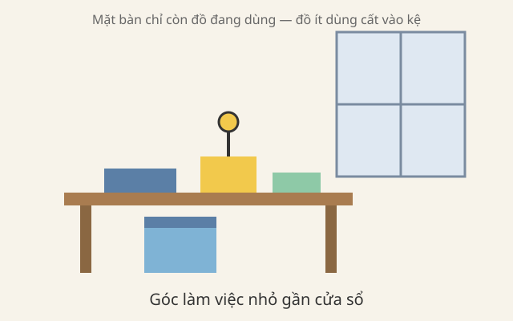

Trang trí góc làm việc tại nhà nhỏ gọn mà đẹp
Góc làm việc tại nhà nhỏ thường thất bại không phải vì thiếu đồ đẹp, mà vì thiếu một chỗ ngồi cố định và thiếu một cách cất đồ rõ ràng. Nhiều người đặt bàn ở nơi còn trống, rồi đặt thêm đồ lên bàn mỗi ngày, đến khi bàn đầy thì lại mua thêm kệ, mua thêm hộp, và cuối cùng góc làm việc trở thành góc để đồ. Bài viết này làm ngược lại: bắt đầu từ thói quen làm việc của bạn, rồi mới quyết định vị trí, bàn ghế, ánh sáng và cách cất trữ theo thứ tự đó.
Bài viết này chỉ nói về góc làm việc và học tập trong nhà nhỏ. Bài không hướng dẫn làm kệ sách chi tiết, vì cách làm kệ sách từ ván gỗ cũ đã có trong một bài khác của website này. Bài cũng không nói về cách trồng cây cảnh hay cắm hoa trên bàn làm việc, vì đó là chủ đề của hai website khác trong hệ thống.
Bắt đầu từ thói quen, không bắt đầu từ việc mua đồ
Trước khi chọn bàn, bạn nên viết ra ba việc mình làm nhiều nhất ở góc này. Ví dụ bạn làm việc bằng laptop và sổ tay, bạn học trực tuyến và cần đặt sách bên cạnh, hay bạn vừa làm việc vừa cần chỗ để máy in. Ba việc này quyết định mặt bàn cần rộng bao nhiêu và cần cất những gì trong tầm tay.
Bạn cũng nên viết ra thời gian mình ngồi làm việc nhiều nhất trong ngày. Nếu bạn làm việc chủ yếu vào ban ngày, ánh sáng tự nhiên quan trọng hơn đèn bàn. Nếu bạn làm việc chủ yếu vào buổi tối, đèn bàn và vị trí ổ điện quan trọng hơn. Nếu bạn chỉ ngồi làm việc một hoặc hai giờ mỗi ngày, một chiếc bàn nhỏ kê sát tường đã đủ. Nếu bạn ngồi làm việc cả ngày, bạn cần quan tâm nhiều hơn tới ghế ngồi và tư thế ngồi.
Một câu hỏi nữa cần trả lời là góc làm việc này có dùng chung với người khác hay không. Nếu bạn ở một mình, bạn có thể để đồ làm việc trên bàn qua đêm. Nếu bạn ở cùng vợ chồng hoặc bạn cùng phòng, bạn cần một cách dọn bàn nhanh vào cuối ngày để người khác có thể dùng chung mặt bàn. Câu trả lời cho câu hỏi này sẽ quyết định bạn cần bao nhiêu hộp cất đồ và bạn nên đặt hộp ở đâu.
Chọn vị trí: gần ánh sáng, xa lối đi
Vị trí tốt nhất cho góc làm việc nhỏ thường là gần cửa sổ, nhưng không phải lúc nào cũng là ngay sát cửa sổ. Bạn nên chọn nơi có ánh sáng tự nhiên vào ban ngày, thoáng khí và ít bị xáo động bởi sinh hoạt trong nhà. Một góc yên tĩnh trong phòng ngủ, một khoảng trống cạnh cửa sổ trong phòng khách, hoặc một phần diện tích trong phòng làm việc chung đều có thể làm góc làm việc, miễn là bạn có thể ngồi đó mà không bị người khác đi qua liên tục.
Bạn nên tránh đặt bàn quay lưng ra cửa ra vào, vì bạn sẽ giật mình mỗi khi có người đi vào. Bạn cũng nên tránh đặt bàn ngay lối đi giữa phòng ngủ và phòng tắm, vì bạn sẽ bị làm phiền mỗi khi có người đi qua. Nếu phòng quá nhỏ và bạn không còn lựa chọn nào khác, bạn nên đặt bàn kê sát tường và ngồi quay mặt ra phòng, để bạn vẫn nhìn thấy lối đi mà không bị chắn tầm nhìn.
Bạn cũng nên đo khoảng trống phía sau ghế trước khi đặt bàn. Bạn cần đủ chỗ để kéo ghế ra và đứng dậy mà không va vào giường hoặc tủ. Nếu khoảng trống phía sau ghế quá hẹp, bạn nên chọn ghế không có tay vịn hoặc ghế có thể đẩy gọn vào gầm bàn sau khi dùng xong.
Chọn bàn ghế vừa với người ngồi, không vừa với hình mẫu
Bàn làm việc cho nhà nhỏ không cần lớn, mà cần vừa với việc bạn làm. Nếu bạn chỉ dùng laptop, sổ tay và một vài vật dụng cơ bản, một chiếc bàn nhỏ gọn đã đủ. Nếu bạn thường xuyên dùng màn hình máy tính, bàn phím rời và nhiều thiết bị, bạn cần bàn rộng hơn. Bạn nên đặt laptop và sổ tay lên bàn thử trước khi mua bàn, để biết mặt bàn cần rộng bao nhiêu.
Ghế ngồi quan trọng hơn bàn, vì bạn ngồi trên ghế nhiều giờ mỗi ngày. Một chiếc ghế tốt không chỉ cần đệm ngồi êm, mà còn cần chiều cao vừa để chân bạn chạm sàn và tay bạn tựa lên mặt bàn một cách thoải mái. Tạp chí ELLE Decoration, trong bài viết về góc làm việc tại nhà (đăng 03/05/2018), nêu khoảng cách từ mặt đất lên đệm ghế dao động từ 40,5 đến 53 cm là khoảng tham khảo cho nhiều người, và độ sâu lòng ghế từ 43 đến 48 cm cho góc tựa vừa phải. Bạn nên dùng hai khoảng này làm điểm bắt đầu khi thử ghế, không nên coi đó là con số đúng cho mọi người, vì chiều cao của mỗi người khác nhau. Cách kiểm tra đơn giản nhất là ngồi thử: khi ngồi thẳng lưng, đùi và cẳng chân của bạn tạo thành góc gần vuông, vai thư giãn, và tay bạn đặt lên mặt bàn mà không phải nhấc vai lên.
Nếu ghế bạn đang dùng quá thấp, bạn có thể kê thêm một chiếc gối tựa nhỏ sau lưng hoặc một đồ gác chân để thi thoảng co giãn sau một hồi làm việc. Nếu bàn quá cao so với ghế, bạn nên kê ghế cao hơn hoặc chọn bàn thấp hơn, thay vì cố ngồi với tư thế vai nhấc lên cả ngày. Tư thế ngồi không thoải mái sẽ làm bạn mỏi nhanh hơn bất cứ món đồ trang trí nào có thể bù lại.
Ánh sáng: ban ngày dùng ánh sáng tự nhiên, buổi tối dùng đèn bàn
Ánh sáng là yếu tố nhiều người bỏ qua khi trang trí góc làm việc, nhưng lại là yếu tố ảnh hưởng trực tiếp tới mắt và sự tập trung. Ban ngày, bạn nên tận dụng ánh sáng tự nhiên từ cửa sổ. Bạn nên đặt bàn sao cho ánh sáng chiếu từ bên cạnh, không chiếu thẳng vào màn hình và không chiếu thẳng vào mắt bạn. Nếu ánh sáng quá gắt, bạn nên dùng rèm mỏng để làm dịu ánh sáng, thay vì quay lưng hoàn toàn về phía cửa sổ.
Buổi tối, bạn cần một chiếc đèn bàn nhỏ gọn, không chiếm quá nhiều diện tích trên bàn. Bạn nên đặt đèn ở phía đối diện tay thuận để hạn chế bóng đổ khi viết. Ví dụ bạn thuận tay phải, bạn nên đặt đèn ở phía trái. Bạn nên chọn đèn có ánh sáng vừa đủ để đọc sách và làm việc, không quá tối và không quá chói. Nếu bạn làm việc bằng máy tính nhiều, bạn nên tránh để đèn bàn chiếu thẳng vào màn hình, vì ánh sáng phản chiếu sẽ làm bạn mỏi mắt.
Bạn cũng nên tránh dùng đèn trang trí quá sáng hoặc quá nhiều màu ở góc làm việc. Đèn trang trí có thể làm góc làm việc đẹp hơn, nhưng nếu đèn quá sáng hoặc nhấp nháy, nó sẽ làm bạn khó tập trung. Bạn nên để đèn trang trí làm điểm nhấn nhỏ, và để đèn bàn làm nguồn sáng chính khi làm việc.
Cất trữ theo chiều dọc để mặt bàn luôn trống
Với góc làm việc nhỏ, cách cất trữ hiệu quả nhất là tận dụng tường phía trên bàn, thay vì đặt thêm đồ lên mặt bàn. Bạn có thể dùng kệ treo tường, bảng ghim hoặc bảng lưới sắt để đựng sách, tài liệu và đồ dùng nhỏ. Bạn nên đặt những thứ hay dùng nhất trong tầm tay, và cất những thứ ít dùng hơn vào ngăn kéo hoặc kệ cao hơn.
Bạn nên giữ mặt bàn chỉ còn những món thật sự cần khi làm việc. Một cách kiểm tra đơn giản là đếm số món trên mặt bàn vào cuối ngày. Nếu mặt bàn có hơn năm món đồ không liên quan tới việc bạn đang làm, bạn nên cất bớt đi. Những món thường ở lại trên mặt bàn là laptop, bút, giấy, đèn bàn và một hộp nhỏ đựng văn phòng phẩm. Những món khác như sách chưa đọc, giấy tờ đã xong và đồ lưu niệm nên được cất vào kệ hoặc hộp riêng.
Bạn cũng nên bó gọn dây cáp điện. Dây sạc laptop, dây sạc điện thoại và dây đèn bàn nếu để rối sẽ làm mặt bàn trông bừa bộn và dễ vướng tay. Bạn nên dùng dây buộc hoặc hộp giấu dây để gom dây lại, và nên đặt ổ điện ở vị trí gần bàn để dây không phải kéo dài qua lối đi.
Màu sắc và đồ trang trí: ít mà có chủ ý
Với góc làm việc nhỏ, bạn nên chọn hai hoặc ba màu chủ đạo và duy trì sự đồng nhất giữa bàn, ghế và phụ kiện. Các gam màu sáng như trắng, kem, be và màu gỗ sáng thường làm góc làm việc có cảm giác rộng hơn. Bạn không cần dùng quá nhiều màu cùng lúc. Bạn nên chọn một màu nền, một màu gỗ và một màu nhấn, rồi giữ nguyên ba màu đó cho cả góc làm việc.
Đồ trang trí trên bàn làm việc nên ít và có chủ ý. Bạn nên chọn một hoặc hai món thật sự làm bạn thích, ví dụ một bức tranh nhỏ, một câu nói truyền cảm hứng, hoặc một món đồ lưu niệm nhỏ. Bạn không nên đặt quá nhiều đồ lưu niệm lên bàn, vì chúng sẽ chiếm chỗ của đồ làm việc và làm bạn khó tập trung. Bạn nên đặt đồ trang trí ở kệ treo hoặc trên tường, để mặt bàn vẫn trống cho việc làm việc.
Lịch dọn năm phút cuối ngày
Góc làm việc nhỏ chỉ gọn được lâu nếu bạn dọn nó mỗi ngày. Bạn nên dành năm phút cuối ngày để dọn bàn: cất giấy tờ đã xong vào kệ, bỏ giấy nháp không cần thiết, xếp bút vào hộp, và lau mặt bàn. Bạn nên làm việc này trước khi tắt đèn, để sáng hôm sau bạn ngồi vào bàn là có thể làm việc ngay, không phải dọn bàn trước.
Bạn cũng nên dọn kệ treo và bảng ghim mỗi tuần một lần. Bạn nên gỡ những tờ giấy đã xong việc xuống, cất những cuốn sách đã đọc xong vào chỗ khác, và kiểm tra xem có món đồ nào trên kệ đã lâu không dùng tới hay không. Nếu có, bạn nên cất món đó vào hộp riêng hoặc cho đi, thay vì để nó chiếm chỗ trên kệ.
Những lỗi hay gặp khi trang trí góc làm việc nhỏ
Lỗi đầu tiên là nhồi quá nhiều đồ trang trí lên bàn. Bạn mua nhiều món đồ nhỏ vì thấy đẹp, nhưng đặt tất cả lên bàn sẽ làm bàn chật và khó làm việc. Bạn nên chọn một hoặc hai món trang trí, và cất những món còn lại vào hộp.
Lỗi thứ hai là đặt bàn ở nơi tối và xa ổ điện. Bạn chọn vị trí vì thấy góc đó trống, nhưng sau đó bạn phải làm việc trong bóng tối hoặc kéo dây điện dài qua phòng. Bạn nên chọn vị trí gần cửa sổ và gần ổ điện trước, rồi mới tính tới chuyện trang trí.
Lỗi thứ ba là mua bàn quá lớn so với phòng. Bàn lớn sẽ làm phòng nhỏ trông chật hơn, và bạn sẽ có xu hướng đặt thêm đồ lên bàn vì thấy còn chỗ trống. Bạn nên mua bàn vừa với việc mình làm, và dùng kệ treo để cất đồ thay vì mua bàn lớn hơn.
Lỗi thứ tư là không có chỗ cất đồ rõ ràng. Bạn có bàn và ghế, nhưng không có kệ, hộp hay ngăn kéo, nên mọi thứ đều nằm trên mặt bàn. Bạn nên chuẩn bị chỗ cất đồ trước khi trang trí, vì trang trí chỉ đẹp khi đồ đạc đã có chỗ của nó.
Kết luận
Trang trí góc làm việc tại nhà nhỏ không bắt đầu từ việc mua đồ đẹp, mà bắt đầu từ việc chọn vị trí, chọn bàn ghế vừa với người ngồi, bố trí ánh sáng và cất trữ theo chiều dọc. Bạn chỉ cần nhớ bốn việc: đặt bàn ở nơi yên tĩnh và có ánh sáng, chọn ghế ngồi thử cho vừa người, giữ mặt bàn chỉ còn đồ đang dùng, và dọn bàn năm phút mỗi ngày. Làm được bốn việc đó, góc làm việc của bạn sẽ gọn gàng và dễ chịu, dù phòng của bạn nhỏ đến đâu.
Nguồn tham khảo
- ELLE Decoration Việt Nam, "ED tips: 6 mẹo tạo góc làm việc tại nhà hiệu quả" — các mẹo về vị trí đặt góc làm việc, chọn bàn ghế vừa vặn, sắp xếp mặt bàn tối giản và tạo cảm hứng làm việc (truy cập 23/11/2026): https://www.elledecoration.vn/homes/smart-living/ed-tips-6-meo-tao-goc-lam-viec-tai-nha-hieu-qua
- HIRU Desk, "Setup góc làm việc nhỏ tại nhà đẹp, tiện lợi" — cách chọn vị trí, chọn bàn vừa phải, chọn màu sắc sáng và tận dụng không gian theo chiều dọc (truy cập 23/11/2026): https://hirudesk.com/setup-goc-lam-viec-nho-tai-nha/
- Nội thất CaCo, "10 Cách Decor Bàn Làm Việc Tại Nhà Cực Chill, Tăng cảm Hứng" — các ý tưởng trang trí bàn làm việc, trong đó có kệ treo, đèn bàn, tranh ảnh và bảng ghim (truy cập 23/11/2026): https://noithatcaco.vn/cam-nang-noi-that/decor-ban-lam-viec-tai-nha-1676.html
Phương án ảnh

Đây là sơ đồ minh họa, không phải ảnh chụp thực hành